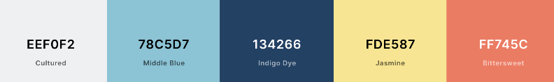

Site Purpose and Goals
The purpose of this site is to provide a place where others may rent the material needed and necessary to enjoy white water rafting while also becoming educated of the sport. It'll provide information in regards to rental availability and requirements to ride. We want others to enjoy and love the adventure while experiencing the beauty the world has to offer. All are welcome to enjoy!
Audience
Website Logo
Style Guide
Color Scheme
Typography
- Site Header: Bubblegum Sans
- Primary Navigation: Bubblegum Sans
- Footer Navigation: Karla
- Heading 1-3: Karla
- Paragraph Text: Karla